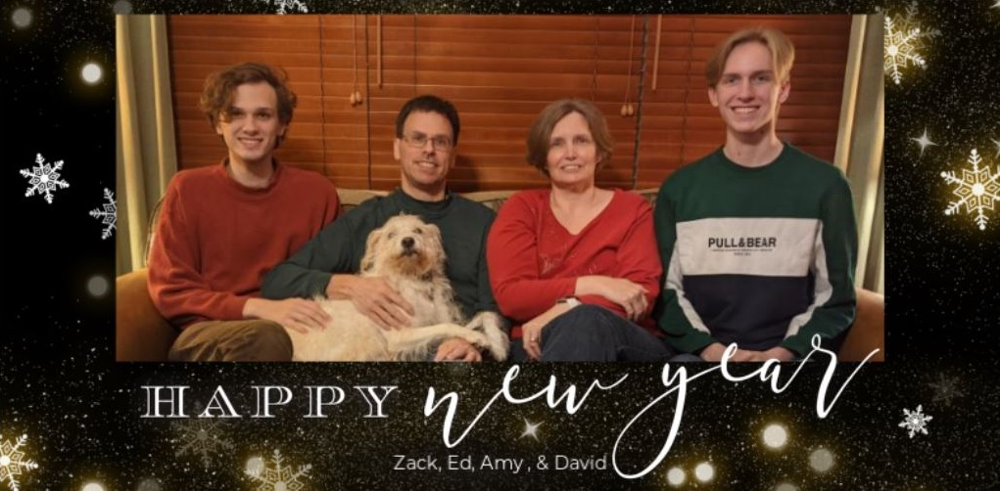

For those who don't live close by, or follow us on facebook, we are going to start our narrative in May of 2019 when David graduated from high school and chose to study Industrial Engineering at Texas Tech in Lubbock. We had a family summer driving vacation in the California Bay area sampling wine country, hills, and the Jelly Belly factory, before moving David into his dorm at Texas Tech University in Lubbock and Zack returning to UT Tyler for his senior year.
There were trips that fall to visit Zack in Tyler, and to see David in Lubbock, and with the nest empty and more road trips on the horizon, Amy traded in her 3rd minivan for a blue Rav4
Thanksgiving was the usual 25+ family & friends joining us in Lake Jackson to appreciate all we have. We did not know that the little things like all the family in one room was soon to be uncommon and something that we miss greatly.
For the final trip of the year the four of us packed one carryon backpack each and flew into Eastern Europe. We then went on a whirlwind 12 days trip to Prague Czechia, Vienna Austria & Budapest Hungary. With our trusty Rick Steves guidebook, Amy’s excel sheet of the schedule, and VRBO accommodations, we clocked >15,000 steps per day to see the sights (check us out on Facebook), experienced the Christmas markets (souvenir mugs and Trdelník), and even ran into friends whose vacation to Paris had been modified due to rail strikes. It was an amazing experience and we will continue to plan others when conditions allow.
New Years eve was on the San Bernard river as we joined with the Meaghers, Herringtons, and Zetah's to wish in 2020.
January and February 2020 were quiet as we were recovering, and then everything slowed down. It didn't stop, we still celebrated birthdays and holidays, but as a smaller group at home and online with family and friends in our "bubble". Excitement became the ability to find multi-ply toilet paper, yeast & flour for baking and the noises from the family back under one roof.
Amy started decluttering by selling items on Facebook Market Place and got out the sewing machine to make custom masks for the family. Ed started some home improvement projects that never made it to the top of the list when there were places to go and people to see. Both of us were able to work from home. We tried to make sure we both were not presenting in meetings simultaneously so there was less cross talk.
David came home at spring break, to go to school virtually for the rest of the semester. Zack graduated from UT Tyler with a bachelors in Civil Engineering on Zoom (a new word to our vocabulary) We moved Zack out of his apartment with the help of a 15' U-Haul and David out of his dorm (an 1100+ mile, 18+ hour round trip).
Amy's father, John, passed away in the late spring, and in the early summer we drove up with everyone to Fulton for his funeral. It was bittersweet to see Lake of the Ozarks and all of the family and friends.
In the fall, David moved back into an on campus apartment closer to classes, but most days were virtual. Zack has been interning at the city while searching for a full time job, and filling out graduate school applications as another possible option if hiring does not pick up.
For the last few years, Ed has been teaching part time at the local college. In the fall, after 30 years in industry, Ed retired from Dow and became part of the full time faculty at Brazosport College, teaching in the Physical Sciences and Process Technology Department.
Thanksgiving was a week-long three-for affair, with one day at Amy's Mom’s house, one day at Ed's Dad’s apartment and one day with our extended bubble of friends (Hoyles, Farrel & McKelvey) in Lake Jackson.
As the year winds down, we hope that you have weathered the storm and everything will be better in 2021.